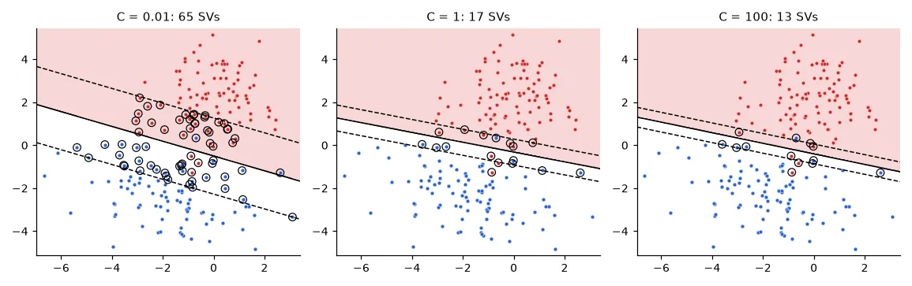
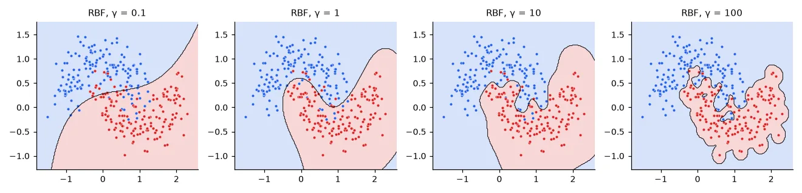
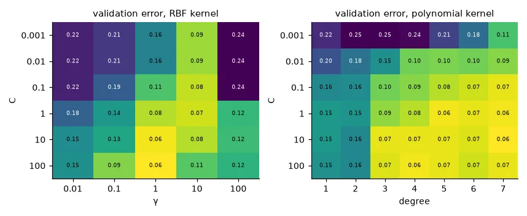

Many lines separate the data. Which one?#
Logistic regression picks the line that maximises the likelihood. The support vector machine picks the line that stays as far as possible from both classes — the one with the widest margin. The intuition: a boundary that passes close to training points will misclassify slightly different test points; a wide street is robust.
With labels \(y_i \in \{-1, +1\}\) and a hyperplane \(\mathbf{w}^\top\mathbf{x} + b = 0\), scale \(\mathbf{w}\) so that the closest points satisfy \(y_i(\mathbf{w}^\top\mathbf{x}_i + b) = 1\). The street between \(\mathbf{w}^\top\mathbf{x} + b = \pm 1\) has width \(2/\|\mathbf{w}\|\), so maximising the margin is minimising \(\|\mathbf{w}\|\):
Real data overlap, so we let points violate the margin by \(\xi_i \ge 0\) and pay \(C\) per unit of violation — the soft margin (same idea as the soft ball of lesson 03):
Eliminating \(\xi\) shows that this is \(\frac{1}{2}\|\mathbf{w}\|^2 + C\sum_i \max(0, 1 - y_i f(\mathbf{x}_i))\): L2 regularisation plus the hinge loss, which is zero for points beyond the margin. That is the key difference with logistic regression — points that are correctly classified with margin have no influence at all.
The primal, solved directly#
It is a convex quadratic program, so CVXPY solves it as written:
def svm_primal(X, y, C):
"""min 1/2 ||w||^2 + C sum(xi) s.t. y_i (w.x_i + b) >= 1 - xi_i, xi_i >= 0."""
w, b, xi = cp.Variable(X.shape[1]), cp.Variable(), cp.Variable(len(y))
cons = [cp.multiply(y, X @ w + b) >= 1 - xi, xi >= 0]
cp.Problem(cp.Minimize(0.5 * cp.sum_squares(w) + C * cp.sum(xi)), cons).solve()
return w.value, b.value
w, b = svm_primal(X, y, C=1.0)
ref = SVC(kernel="linear", C=1.0).fit(X, y)
margin = y * (X @ w + b)
print("CVXPY primal : w = %s, b = %.4f, margin width 2/|w| = %.3f" % (np.round(w, 4), b, 2 / np.linalg.norm(w)))
print("scikit-learn : w = %s, b = %.4f" % (np.round(ref.coef_[0], 4), ref.intercept_[0]))
print("support vectors: %d with CVXPY (margin <= 1), %d in scikit-learn"
% (np.sum(margin <= 1 + 1e-4), len(ref.support_)))
CVXPY primal : w = [0.3769 1.6538], b = 0.5263, margin width 2/|w| = 1.179
scikit-learn : w = [0.3768 1.6533], b = 0.5263
support vectors: 17 with CVXPY (margin <= 1), 17 in scikit-learn
The support vectors are the points on or inside the margin (\(y_i f(\mathbf{x}_i) \le 1\)). Move any other point (without crossing the margin) and the solution does not change.
What C does#
for C in (0.001, 0.01, 1, 100):
clf = SVC(kernel="linear", C=C).fit(X, y)
print(f"C = {C:<6}: margin width {2 / np.linalg.norm(clf.coef_):.2f}, "
f"{len(clf.support_):3d} support vectors, training error {1 - clf.score(X, y):.3f}")
C = 0.001 : margin width 6.68, 160 support vectors, training error 0.025
C = 0.01 : margin width 3.35, 65 support vectors, training error 0.025
C = 1 : margin width 1.18, 17 support vectors, training error 0.020
C = 100 : margin width 0.89, 13 support vectors, training error 0.020

Small C means a wide margin
My lab report says "when C decreases, the margin also decreases". It is the opposite, and the formula says why: \(C\) is the price of a violation. Cheap violations (small \(C\)) let the optimiser shrink \(\|\mathbf{w}\|\) freely, so the street gets wider and more points end up inside it. Large \(C\) makes violations expensive: a narrow margin that bends to every training point — more variance, risk of overfitting. \(C\) plays the role of \(1/\lambda\) in ridge regression.
The dual and the kernel trick#
Apply lesson 03's recipe — Lagrangian, set the derivatives with respect to \(\mathbf{w}\), \(b\), \(\xi\) to zero — and the primal becomes:
with \(\mathbf{w} = \sum_i \alpha_i y_i \mathbf{x}_i\), so \(f(\mathbf{x}) = \sum_i \alpha_i y_i\, \mathbf{x}_i^\top\mathbf{x} + b\). Points with \(\alpha_i > 0\) are the support vectors.
Look at where the data appear: only through dot products \(\mathbf{x}_i^\top\mathbf{x}_j\). Now imagine mapping each point to a richer feature space \(\phi(\mathbf{x})\) — all monomials up to degree 3, say — where the classes become linearly separable. We never need \(\phi\) itself, only \(\phi(\mathbf{x}_i)^\top\phi(\mathbf{x}_j)\), and for many maps that dot product has a closed form, a kernel \(k(\mathbf{x}_i, \mathbf{x}_j)\):
- polynomial: \(k(\mathbf{a}, \mathbf{b}) = (1 + \mathbf{a}^\top\mathbf{b})^p\) — all monomials up to degree \(p\);
- Gaussian (RBF): \(k(\mathbf{a}, \mathbf{b}) = \exp(-\gamma\|\mathbf{a} - \mathbf{b}\|^2)\) — an infinite-dimensional feature space, yet one exponential to compute.
That is the kernel trick: replace every dot product by \(k\), and a linear algorithm draws non-linear boundaries. Here is the dual, written for CVXPY, on the two-moons dataset:
Xm, ym = make_moons(n_samples=200, noise=0.2, random_state=0)
ym = 2 * ym - 1.0
def rbf(A, B, gamma):
"""Gaussian kernel matrix k(a, b) = exp(-gamma ||a - b||^2), shape (len(A), len(B))."""
d2 = (A ** 2).sum(1)[:, None] - 2 * A @ B.T + (B ** 2).sum(1)[None, :]
return np.exp(-gamma * d2)
def svm_dual(X, y, C, gamma):
"""max sum(a) - 1/2 sum_ij a_i a_j y_i y_j k(x_i, x_j) s.t. 0 <= a <= C, sum a_i y_i = 0."""
K = rbf(X, X, gamma)
L = np.linalg.cholesky(K + 1e-8 * np.eye(len(X))) # K = L L^T, so a^T Q a = ||L^T (a*y)||^2
a = cp.Variable(len(y))
obj = cp.Maximize(cp.sum(a) - 0.5 * cp.sum_squares(L.T @ cp.multiply(a, y)))
cp.Problem(obj, [a >= 0, a <= C, a @ y == 0]).solve()
a = a.value
on_margin = (a > 1e-5) & (a < C - 1e-5) # 0 < a_i < C: exactly on the margin
b = np.mean(y[on_margin] - (a * y) @ K[:, on_margin])
return lambda Z: (a * y) @ rbf(X, Z, gamma) + b, a
f, alpha = svm_dual(Xm, ym, C=1.0, gamma=1.0)
ref = SVC(kernel="rbf", C=1.0, gamma=1.0).fit(Xm, ym)
grid = np.random.uniform(-1.5, 2.5, (2000, 2))
print("dual from scratch: %d support vectors (scikit-learn %d), same predicted class on %.1f%% of the plane"
% (np.sum(alpha > 1e-5), len(ref.support_), 100 * np.mean(np.sign(f(grid)) == ref.predict(grid))))
dual from scratch: 51 support vectors (scikit-learn 51), same predicted class on 100.0% of the plane
(The Cholesky factor \(L\) is there only to write \(\alpha^\top Q\alpha\) as a sum of squares, which CVXPY recognises as convex without checking a 200×200 matrix.) The bias comes from the support vectors strictly inside \((0, C)\), which lie exactly on the margin. scikit-learn's SVC uses a specialised solver (SMO, in libsvm), much faster than a generic QP, but it solves this same problem.
The two hyper-parameters of the RBF kernel#
\(\gamma\) sets the reach of each training point: \(k\) decays with distance at rate \(\gamma\). Small \(\gamma\) — every point influences far away, the boundary is smooth, almost linear. Large \(\gamma\) — every support vector only affects its immediate neighbourhood, and the boundary wraps around individual points.
Xn, yn = make_moons(n_samples=900, noise=0.25, random_state=42)
Xtr, Xte, ytr, yte = train_test_split(Xn, yn, test_size=1 / 3, stratify=yn, random_state=0)
Xtr, Xva, ytr, yva = train_test_split(Xtr, ytr, test_size=0.5, stratify=ytr, random_state=0)
for g in (0.01, 0.1, 1, 10, 100):
clf = SVC(kernel="rbf", C=10, gamma=g).fit(Xtr, ytr)
print(f"gamma = {g:<5}: train error {1 - clf.score(Xtr, ytr):.3f}, validation error {1 - clf.score(Xva, yva):.3f}")
gamma = 0.01 : train error 0.137, validation error 0.153
gamma = 0.1 : train error 0.113, validation error 0.133
gamma = 1 : train error 0.067, validation error 0.063
gamma = 10 : train error 0.037, validation error 0.080
gamma = 100 : train error 0.007, validation error 0.117

\(C\) and \(\gamma\) interact, so we search them together on a grid and choose on the validation set:
Cs, gammas = np.logspace(-3, 2, 6), np.logspace(-2, 2, 5)
err = np.array([[1 - SVC(kernel="rbf", C=C, gamma=g).fit(Xtr, ytr).score(Xva, yva) for g in gammas] for C in Cs])
i, j = np.unravel_index(err.argmin(), err.shape)
best = SVC(kernel="rbf", C=Cs[i], gamma=gammas[j]).fit(Xtr, ytr)
print("best on validation: C = %g, gamma = %g -> validation error %.3f, test error %.3f"
% (Cs[i], gammas[j], err[i, j], 1 - best.score(Xte, yte)))
degrees = range(1, 8)
err_p = np.array([[1 - SVC(kernel="poly", coef0=1, degree=d, C=C).fit(Xtr, ytr).score(Xva, yva)
for d in degrees] for C in Cs])
i2, j2 = np.unravel_index(err_p.argmin(), err_p.shape)
best_p = SVC(kernel="poly", coef0=1, degree=degrees[j2], C=Cs[i2]).fit(Xtr, ytr)
print("polynomial kernel: C = %g, degree %d -> validation error %.3f, test error %.3f"
% (Cs[i2], degrees[j2], err_p[i2, j2], 1 - best_p.score(Xte, yte)))
best on validation: C = 100, gamma = 1 -> validation error 0.060, test error 0.063
polynomial kernel: C = 10, degree 7 -> validation error 0.060, test error 0.083

Both kernels reach 6% on validation, but on the test set the RBF model holds up better. With validation errors this close (0.060 vs 0.060, on 300 samples), the choice of kernel is within noise; lesson 06 shows how to make such comparisons less noisy.
Never tune on the test set
In the spam part of my kernel-SVM lab I filled the grid with test errors, picked the best \((C, \gamma)\) and reported that same test error. The number is optimistic by construction: among 30 configurations, the winner is partly the luckiest on those particular test e-mails. In the same notebook, the "train error" printed for the polynomial SVM was a stale variable from the RBF model. The cure for both is lesson 06's discipline: a pipeline where selection only ever sees validation folds.
SVMs in practice#
- Scale the features — the RBF kernel uses distances, so lesson 01's warning applies in full.
- Training cost grows between \(O(N^2)\) and \(O(N^3)\): SVMs shine up to ~10⁴–10⁵ samples. Beyond that, linear SVMs (
LinearSVC) or neural networks. - Multi-class:
SVCtrains one SVM per pair of classes (one-vs-one) and votes; on MNIST digits 0/2/8 my linear SVM reached 97.5%. - No probabilities by default (the output is a distance to the boundary);
probability=Trueadds a calibration step.
Exercises#
- Implement the linear SVM by subgradient descent on \(\frac{\lambda}{2}\|\mathbf{w}\|^2 + \frac1N\sum_i \max(0, 1 - y_i(\mathbf{w}^\top\mathbf{x}_i + b))\) (the Pegasos algorithm). Compare with the CVXPY solution.
- Show numerically that the polynomial kernel with \(p=2\) in 2-D equals the dot product of the explicit features \(\phi(\mathbf{x}) = (1, \sqrt2 x_1, \sqrt2 x_2, x_1^2, x_2^2, \sqrt2 x_1x_2)\).
- Train an RBF SVM on the spam data of lesson 04, choosing \((C, \gamma)\) by 5-fold cross-validation on the training set only (
GridSearchCV). Compare with the logistic regression.